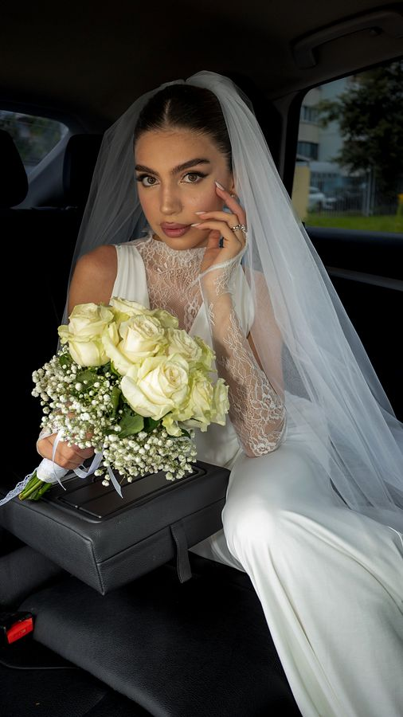
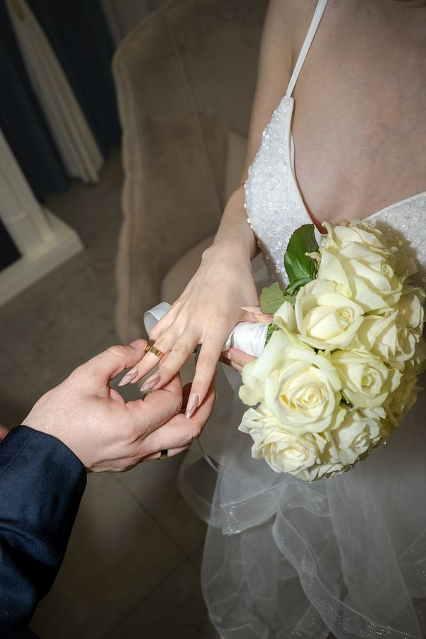
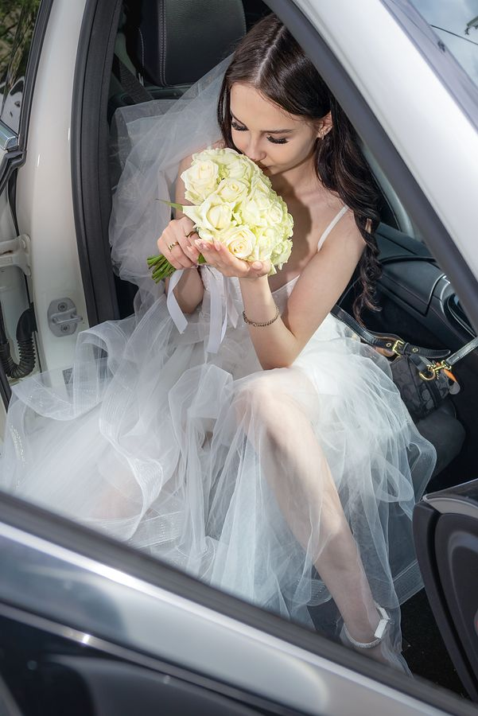
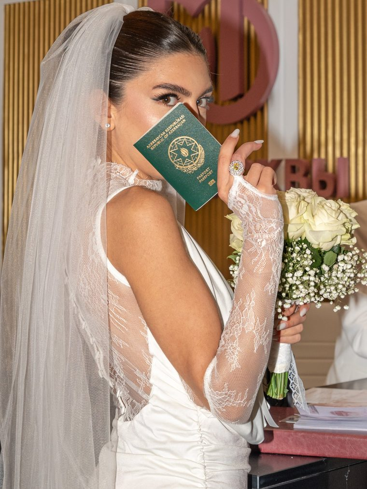
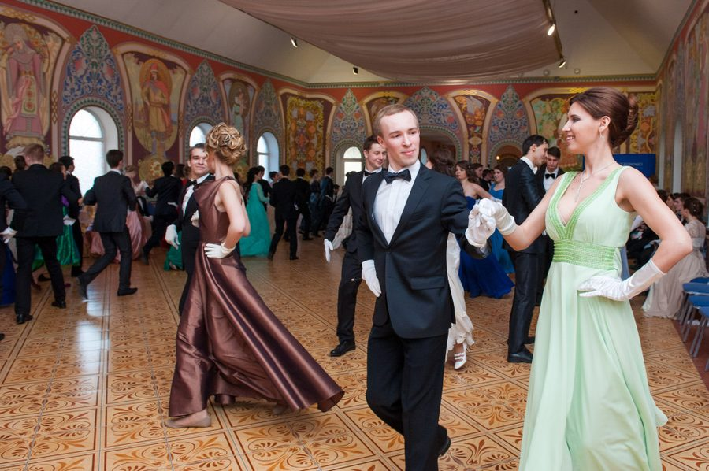
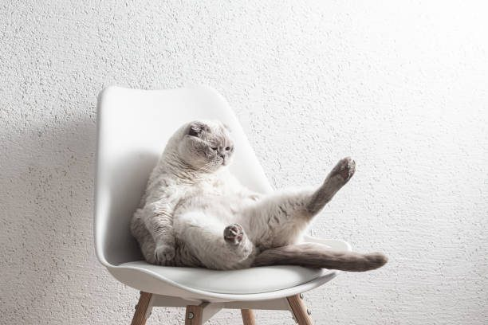
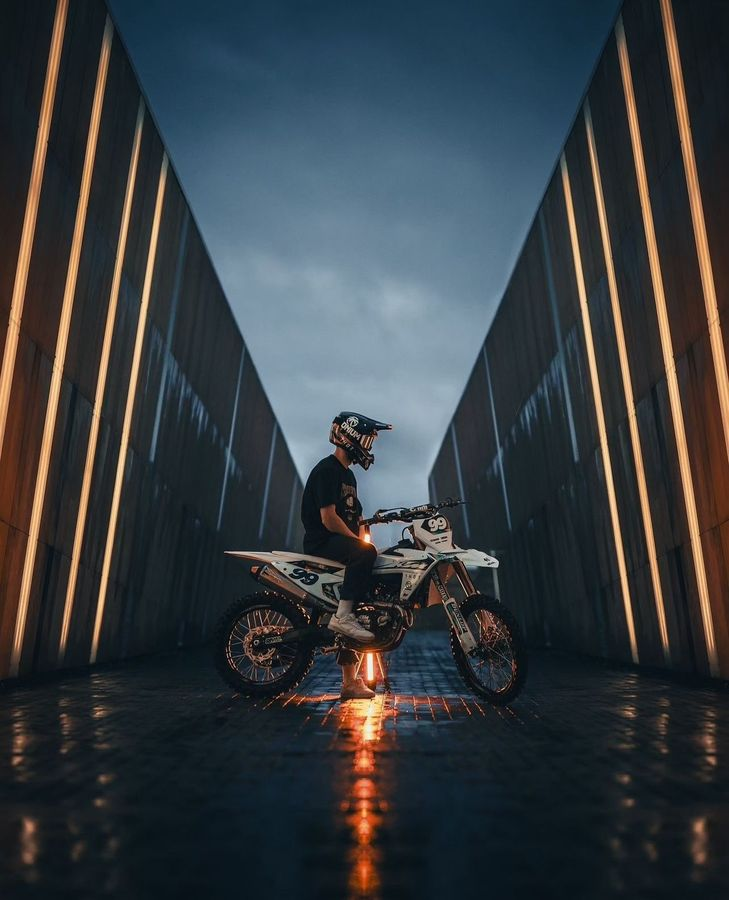
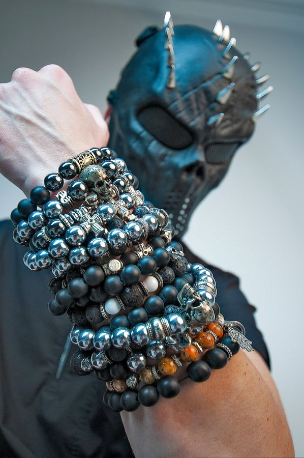
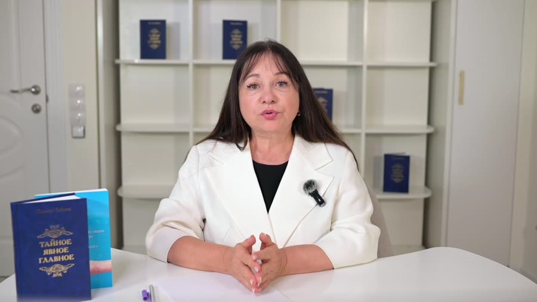

Свадебный фотограф в Москве и Подмосковье
Живые фотографии вашего дня
Свадьба, роспись в ЗАГСе, венчание, крещение и выписка из роддома в Москве и Подмосковье. Снимаю эмоции, а не позы, и отдаю готовые фото быстро.
Я Дмитрий, снимаю любовь в Москве и Подмосковье
Я фотограф с большим стажем. Снимаю в ЗАГСах Москвы и Московской области, в усадьбах, во дворцовых залах и на шумных банкетах. Мне важно, чтобы через десять лет вы открыли альбом и почувствовали этот день заново.
Я не ставлю вас в зажатые позы. Подскажу, где встать и куда смотреть, а дальше просто ловлю настоящие эмоции: смех, слёзы мамы, взгляд жениха, когда он впервые видит невесту.
Что я снимаю
Свадьбы, крещения, детские праздники и фотосессии с автомобилем. Нажмите на карточку, чтобы посмотреть фотографии.

Свадьба
Сборы, роспись в ЗАГСе, венчание, прогулка и банкет. Смотрите портфолио свадеб.

Крещение
Купель, свечи, крёстные и первые семейные портреты в храме. Снимаю бережно, не мешая таинству.

Детские фотосессии
Дни рождения, утренники, выписка из роддома и семейные фотосессии с детьми.

Автофотограф
Фото авто для продажи, автосалонов и дилеров, фотосессия с вашей машиной.
Другие направления
Снимаю выпускные и детские праздники, выставки, авто и мото, товары, интерьеры, архитектуру и производства. А ещё делаю логотипы и записываю видеоуроки.

Фотосессия выпускного
Фотосессия выпускников школы, детского сада и вуза, репортаж с праздника.
Подробнее →
Выставки и мероприятия
Съёмка выставок, стендов, открытий, конференций и деловых событий.
Подробнее →
Дома, ЖК и коттеджи
Архитектурная съёмка жилых комплексов, инфраструктуры, домов и коттеджных посёлков.
Подробнее →
Фотосессия животных
Собаки, кошки, лошади и другие питомцы в студии, дома и на природе.
Подробнее →
Заводы и производства
Промышленная съёмка цехов, оборудования, процессов и сотрудников.
Подробнее →
Фотосессия квартир и интерьеров
Фото квартир для продажи и аренды, дизайн-проектов, апартаментов и отелей.
Подробнее →Логотипы под ключ
Разработка логотипа и фирменного стиля для бизнеса, магазина и маркетплейса.
Подробнее →
Мотофотограф
Фотосессия с мотоциклом, съёмка мотоцикла для продажи, мотокросс и эндуро.
Подробнее →
Предметная съёмка
Фото товаров для Wildberries, Ozon, каталогов, сайтов и соцсетей.
Подробнее →
Видеозапись и видеоуроки
Видеозапись и съёмка видеоуроков, онлайн-курсов, экспертных роликов и видео для запуска.
Подробнее →Честные цены, без пакетов
Платите только за время съёмки. Никаких скрытых доплат и обязательных «пакетов».
Церемония, кольца, поздравления гостей и портреты пары.
Свадьба, венчание, выписка из роддома, прогулка.
Каждый следующий час дешевле, чем первый.
Посчитайте свою съёмку
Роспись в ЗАГСе отдельно — 5 000 ₽.
Три шага до ваших фотографий
Пишете или звоните
Обсуждаем дату, место и сколько часов нужно. Бронирую день за вами.
Снимаю ваш день
Знаю, как идут роспись и банкет, и не пропускаю важные моменты. Вы просто проживаете день.
Получаете фото
Отбираю и обрабатываю лучшие кадры и быстро отдаю их вам по ссылке.
Настоящие свадьбы в Москве
Нажмите на фото, чтобы открыть его на весь экран. На телефоне листайте свайпом.
Свадебный фотограф в Москве и Московской области
Меня зовут Дмитрий, я свадебный фотограф в Москве. Снимаю свадьбы, торжественную роспись в ЗАГСе, венчание и крещение в храме, выписку из роддома и love story. Работаю в ЗАГСах и дворцах бракосочетания Москвы, а также по всему Подмосковью.
Фотограф на свадьбу без постановки
Живые фотографии получаются, когда пара не думает о камере. Я подскажу, где встать и как держаться, а дальше снимаю настоящие эмоции: первую встречу жениха и невесты, слёзы родителей, смех гостей на банкете.
Фотограф в ЗАГС и на прогулку
Знаю, как проходит регистрация брака, поэтому не пропущу обмен кольцами и первый поцелуй. После росписи помогу выбрать место для свадебной прогулки: Царицыно, Коломенское, Кусково, Архангельское, набережные и усадьбы Подмосковья.
Почасовая оплата
Вы платите только за время съёмки: роспись в ЗАГСе 5 000 ₽, первый час 5 000 ₽, каждый следующий 3 000 ₽. Готовые фотографии отдаю быстро.
Сколько стоит свадебный фотограф в Москве?
Роспись в ЗАГСе — 5 000 ₽. Первый час съёмки свадьбы, венчания, крещения или выписки — 5 000 ₽, каждый следующий час — 3 000 ₽. Например, 4 часа обойдутся в 14 000 ₽. Без пакетов и скрытых доплат.
Вы снимаете в Подмосковье?
Да, снимаю по всей Москве и Московской области: в ЗАГСах, дворцах бракосочетания, усадьбах, загородных площадках и ресторанах. Условия выезда за МКАД обсуждаем при бронировании.
Когда будут готовы фотографии?
Отдаю готовые фотографии быстро, без месяцев ожидания. Точный срок называю заранее, при бронировании даты. Фото приходят по ссылке, их удобно скачать на телефон и компьютер.
Можно заказать фотографа только на роспись в ЗАГСе?
Да. Съёмка торжественной регистрации в ЗАГСе стоит 5 000 ₽: церемония, обмен кольцами, поздравления гостей и короткая фотосессия пары после росписи.
Снимаете выписку из роддома, венчание и крещение?
Да. На выписке снимаю встречу семьи у роддома, в храме работаю тихо и деликатно, не мешая таинству. Оплата почасовая, как и на свадьбе.
Как забронировать дату?
Позвоните или напишите в WhatsApp, Telegram или Max на +7 926 854-23-33. Я сразу скажу, свободна ли дата, и закреплю её за вами.
Давайте снимем ваш день
Популярные даты разбирают заранее. Напишите сейчас, и я сразу скажу, свободен ли я.
+7 926 854-23-33